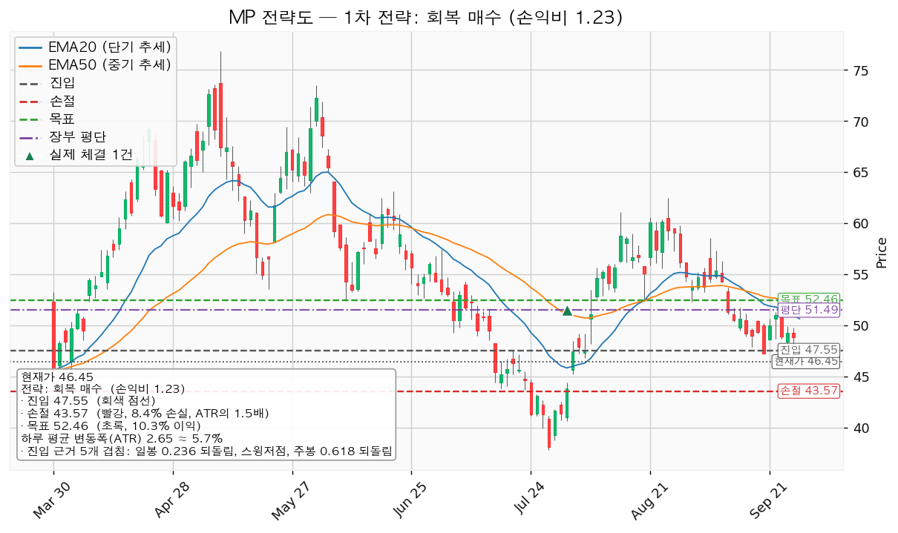
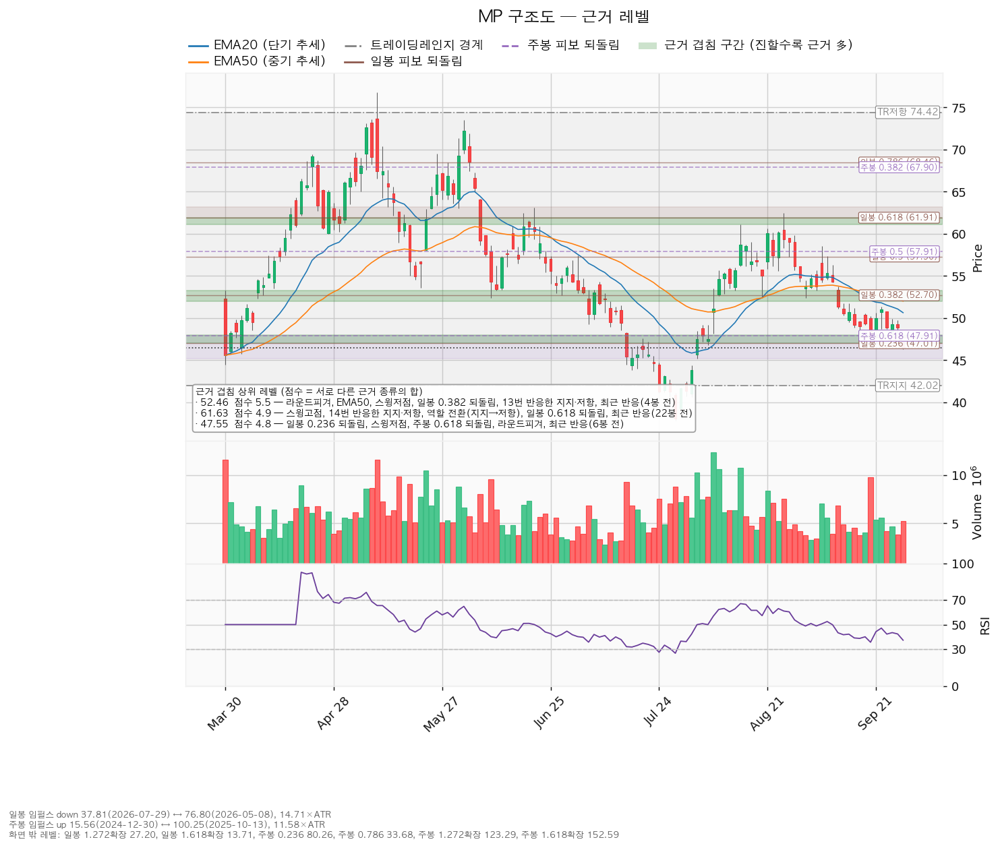
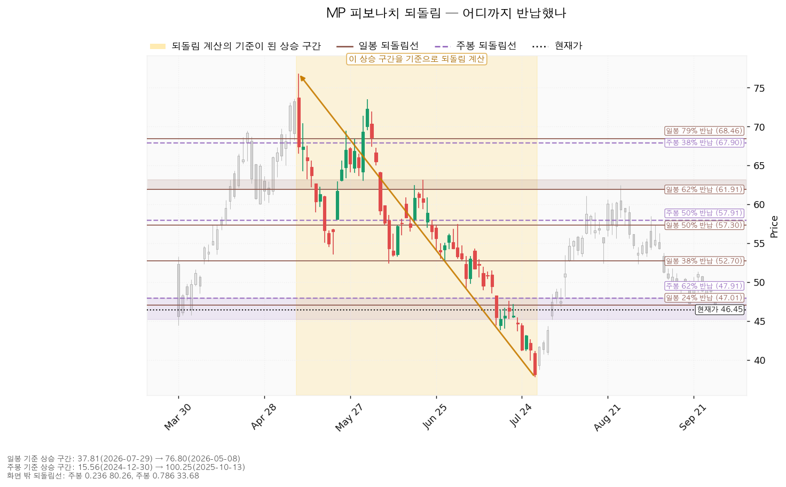
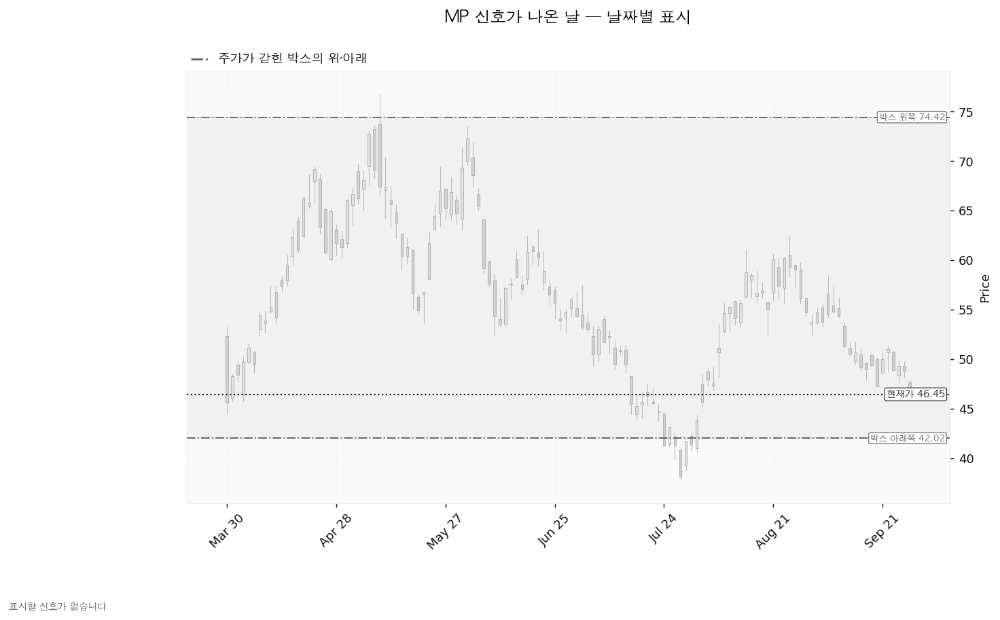

MP 머티리얼즈(MP)는 미국 캘리포니아 마운틴패스 광산에서 희토류를 채굴·정제하고, 텍사스 포트워스에서 희토류 영구자석을 생산하는 기업입니다.
기준은 9월 28일 종가 46.45달러, 하루 평균 변동폭(ATR) 2.65달러(주가의 5.71%)입니다. 미국 시장은 S&P 500 7,684가 200일 이동평균 7,209 위(+6.58%)라 신규 진입이 가능한 국면입니다.
| 구분 | 가격 | 판정 방식 | 현재가 대비 | 상태 |
|---|---|---|---|---|
| 회복선(진입 조건) | 47.55달러 | 일봉 종가로 회복한 뒤 되돌림에서 지지되는지 | +2.37% (0.41배) | 회복 대기 |
| 집행 손절 | 43.57달러 | 장중 도달 시 전량 매도 — 진입한 경우에만 유효, 미진입이면 무의미 | -6.20% (1.09배) | 대기 |
| 관망 종료 기준 | 42.02달러 또는 2026-11-06 실적 | 아래쪽에 두 근거 이상 겹친 자리는 폐기선 하나뿐이라 폐기선이 겸합니다 | -9.54% (1.67배) | 유지 중 — 이탈 시 매수 계획 종료, 새 리포트 대기 |
| 확인선 | 52.46달러 | 일봉 종가 돌파 후 되돌림 지지 확인 | +12.94% (2.27배) | 미돌파 |
| 폐기선(구조) | 42.02달러 | 이탈 후 3거래일 내 종가 회복 실패(또는 그 전에 39.37달러 아래 종가) + 반등에서 저항 확인 | -9.54% (1.67배) | 유지 중 |
| 항목 | 내용 |
|---|---|
| 셋업 | 저항 회복 매수 — 회복 확인형(저항을 종가로 되찾은 뒤에만 진입) |
| 진입 / 손절 / 목표 | 47.55 / 43.57 / 52.46달러, 목표에서 전량 매도 (목표 도달), 트레일링 없음 |
| 손익비 | 1:1.23 (손절 1.50 ATR, 진입가의 8.36%) — 구조적 손절 1.5 ATR 기준 1:1.23으로 같습니다 |
| 진입 근거 | 47.01~48.00달러에 일봉 0.236 되돌림, 스윙저점(9/18 47.26달러), 주봉 0.618 되돌림, 라운드피겨 48, 6봉 전 반응이 겹칩니다 |
| 손절 근거 | 진입 아래 가까운 겹침 구간이 없어 진입 기준선에서 ATR의 1.5배 아래 |
| 엣지 | 모멘텀 — 저항을 종가로 되찾으면 그 방향이 이어진다는 전제. 자주 틀리고 소수가 크게 맞는 유형입니다(일반적 성격이며 측정값이 아닙니다) |
산출된 셋업은 하나이며, 손익비 1.23 × 회복 확인형 × 진입 구간의 다섯 근거로 대표가 됐습니다. 상대강도·거래량 배수 0.80배(지수 대비 20일 초과수익 -16.88%, 상대강도선 20일 기울기 -16.94%, 돌파 구간 거래량 1.14배)가 곱해졌지만 셋업이 하나라 순서는 바뀌지 않았습니다. 진입~목표가 1.85 ATR로 2배(관행적 기준)에 못 미쳐 단일 청산으로 끝내며, 절반을 50.32달러에서 나누고 손절을 본전으로 올리면 전 구간 손익비가 1:0.96, 본전 청산 시 하한 1:0.35로 내려갑니다. 확인선과 목표가 같은 52.46달러이므로 막히고 되밀리면 거기서 전량 매도 (목표 도달)이고, 일봉 종가로 넘으면 새 셋업으로 다시 잡습니다. 현재가 추격 비권장입니다(47.55달러 종가 회복 전). 되돌림 대기 후보는 42.01달러(박스 하단 + 라운드피겨)이고, 현재가가 5거래일 유지되면 EMA20은 50.64 → 48.99, EMA50은 52.02 → 51.01달러로 내려옵니다 — 가격 예측이 아니라 평균선 위치 계산입니다. 계획 진입가 47.55달러는 평단 51.4925달러 아래라, 8주를 팔지 않은 채 사면 평단을 낮추는 매수가 됩니다.

| 가격대 | 겹친 근거 | 현재가 대비 |
|---|---|---|
| 57.31~57.91달러 | 일봉·주봉 0.5 되돌림, 스윙고점 | +23.4% |
| 52.00~53.28달러 | 13회 반응한 선반, EMA50, 스윙저점 3개, 일봉 0.382 되돌림, 라운드피겨 52 — 목표·확인선 | +11.9% |
| 47.01~48.00달러 | 일봉 0.236·주봉 0.618 되돌림, 스윙저점, 라운드피겨 48 — 회복선 | +1.2% |
| 42.00~42.02달러 | 박스 하단, 라운드피겨 42 — 폐기선 | -9.5% |
박스는 일봉 751개 중 180봉 창으로 판정했습니다(박스 안 체류 97.2%, 40봉 창은 65.0%로 박스로 인정되지 않음, 90봉 창은 92.2%). 박스 42.02~74.42달러는 폭이 ATR의 12.22배이고 현재가는 아래에서 13.7% 지점입니다. 직전 구간(20.47~88.33달러 추세·확장 구간)과 같은 가격대라 같은 횡보의 연장입니다. 안쪽 판정은 매집 우위 — 지지 테스트 거래량이 3/30 2.09배 → 4/2 0.84배 → 7/29 1.67배 → 8/6 1.26배 → 9/28 1.07배로 줄고, 저점이 절상(7/29 37.81 → 9/28 46.31달러)됐습니다. 55.14달러 선반은 지지였다가 저항으로 바뀐 자리입니다.

일봉 되돌림은 76.80달러(5/8) → 37.81달러(7/29) 하락 구간 기준 23.6% 47.01 / 38.2% 52.70 / 50% 57.31달러이고, 주봉은 15.56달러(2024-12-30) → 100.25달러(2025-10-13) 상승 구간 기준 61.8% 47.91 / 50% 57.91달러입니다. 현재가는 주봉 61.8% 되돌림 47.91달러를 다시 내줬고, 회복선은 그 선과 일봉 23.6%가 만나는 구간입니다.

이번 창에서 잡힌 신호일은 없습니다(속임수 하락·속임수 상승·강세 신호·약세 신호 모두 없음). 국면 후보는 하락 국면(하락 추세·EMA 역배열·기울기 음)이며 확정 판정은 아닙니다.

(a) 후행 EPS -0.33달러 적자라 후행 배수는 없고, 선행 배수 53.15배(내년 EPS 0.87391달러, 올해 0.02926달러 대비 성장률 +2,887%)입니다 — 적자 탈출 구간이라 배수로 싸다·비싸다를 말할 수 없습니다. (b) 애널리스트 17명, 평균 74.29 / 최저 57.00 / 최고 100.00달러, 강력매수이며 현재가는 17명 중 가장 낮은 목표보다도 아래입니다(최저까지 +22.71%). (c) 내년 EPS 추정이 90일 -20.5%, 30일 -0.5%로 가격과 함께 내려와 이익 전망 하향을 동반한 하락이고, 최근 30일은 하향이 멈췄습니다(올해 추정의 30일 -627.2%는 기준값이 0 부근이라 읽을 수 없는 값). (d) 2025년 12월 결산 영업현금흐름 -155,755,000달러, 설비투자 172,375,000달러(-7.5%), 잉여현금흐름 -328,130,000달러로 영업 단계에서 현금이 나갑니다. (e) 평균 목표의 내재 배수는 85.0배(최저 목표도 65.2배)로 현재 53.15배보다 높아 상승 여력 대부분이 배수 확장에 기댑니다. 소재 섹터는 20일 초과수익 -6.61%로 미국 11개 섹터 중 8위(1위 기술 +5.12%)라 주도주가 아닙니다. 컨센서스는 12개월, 셋업은 수 주 시계라 층위가 다릅니다.
2026-11-06 분기 실적 — 영업현금흐름 적자가 -155,755,000달러에서 줄었는지, 내년 EPS 추정 0.87391달러가 유지되는지(다시 두 자릿수 하향이면 회복 후보에서 제외)를 봅니다. 다음 실적 이후 2~3개 분기 구간은 확인할 자료가 없습니다.
47.55달러 종가 회복 시 진입, 손익비 1:1.23, 미달 일곱 중 추세 항목이 다수라 회복 확인 전에는 사지 않습니다. 1회 손실 한도 계좌의 1%(1,394,984원 ≈ 1,026달러)에서 손절 폭 8.36%로 나온 비중은 계좌의 12.0%(16,739,808원 ≈ 12,308달러, 47.55달러 기준 약 258주)로 13% 상한 안입니다(환율 1,360.10원). 도구 적합성은 문제없습니다 — ATR이 주가의 5.71%로 8% 아래이고 손절 폭은 1.50 ATR입니다. 보유 8주(계좌의 0.36%)는 직전 계획대로 전량 매도 (손절)합니다.
용어 · ATR은 하루 평균 움직이는 폭입니다. EMA20·EMA50은 최근 20일·50일 가격을 요즘 값에 가중치를 더 줘 평균한 선이고, 200일선은 200일 단순평균입니다. 되돌림(피보나치)은 직전 큰 움직임의 몇 %를 되돌렸는지로 그은 선입니다.